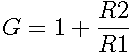

Along with the inverting amplifier, the noninverting amplifier is one of the simplest opamp configurations. It amplifies the signal by a fixed gain.
This is accomplished with negative feedback from the output to the inverting input of the opamp via R2. Combined with R1, this forms a voltage divider that attenuates the output; the opamp then acts to ensure this attenuated version of the output signal is equal to the input signal. The gain of this circuit is thus .
Unlike the inverting amplifier, this configuration has near-infinite input impedance.